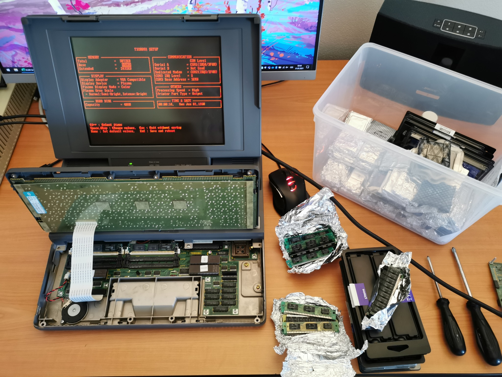
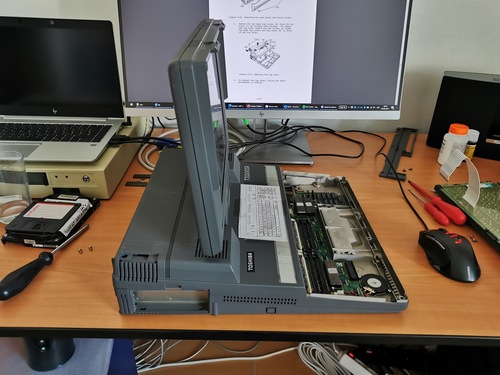
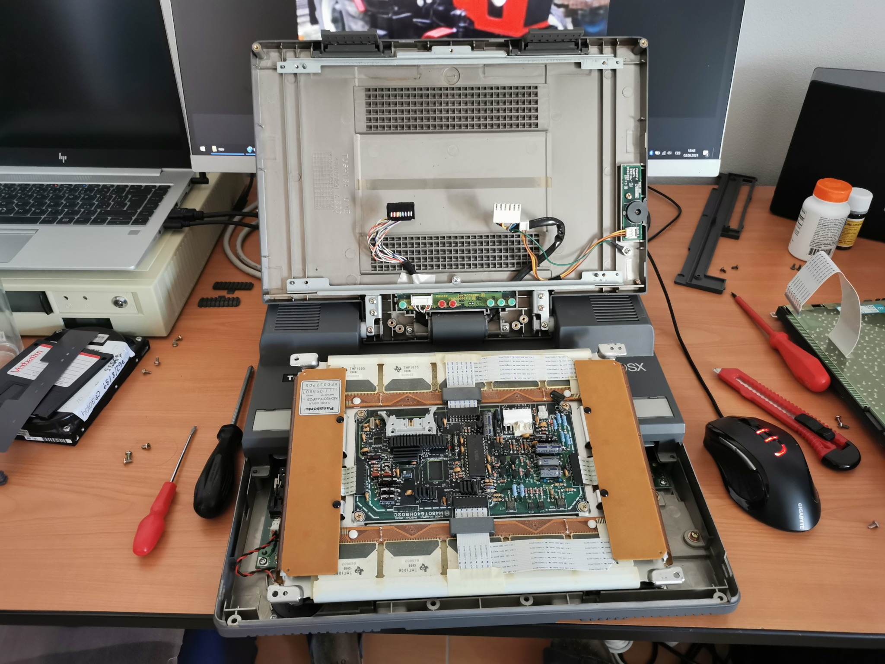
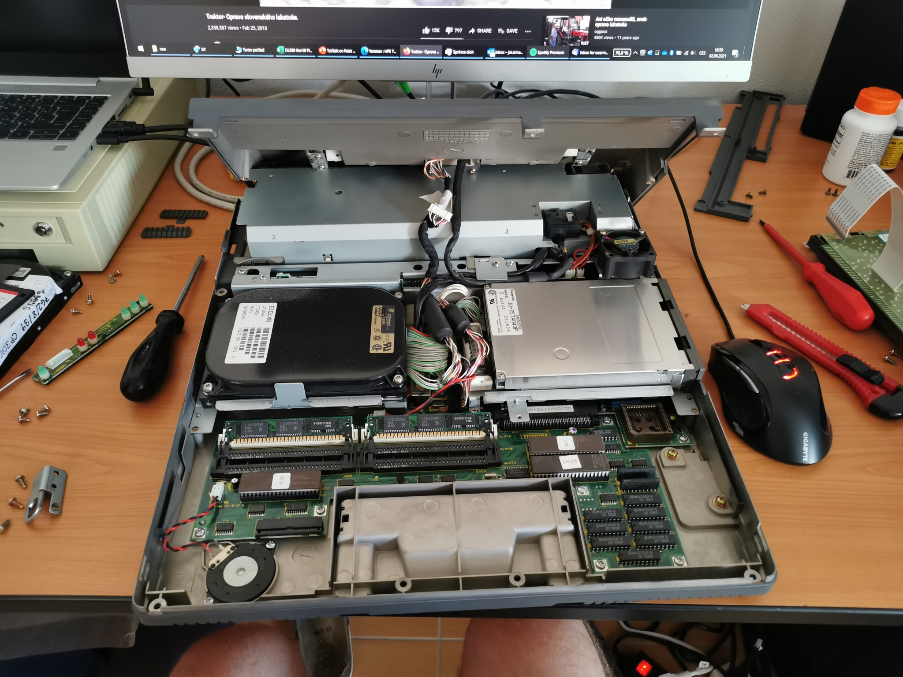
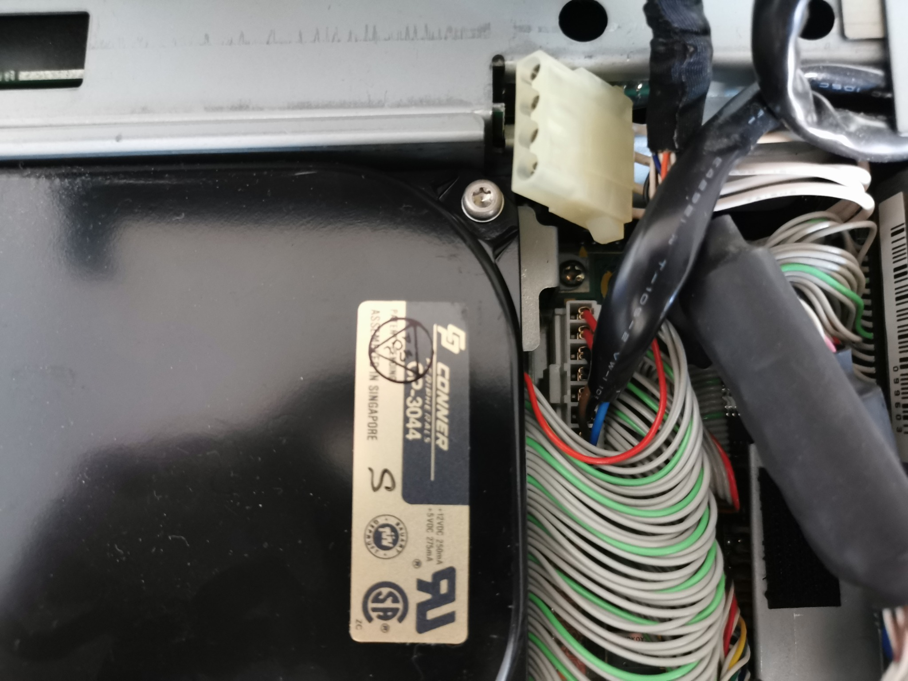
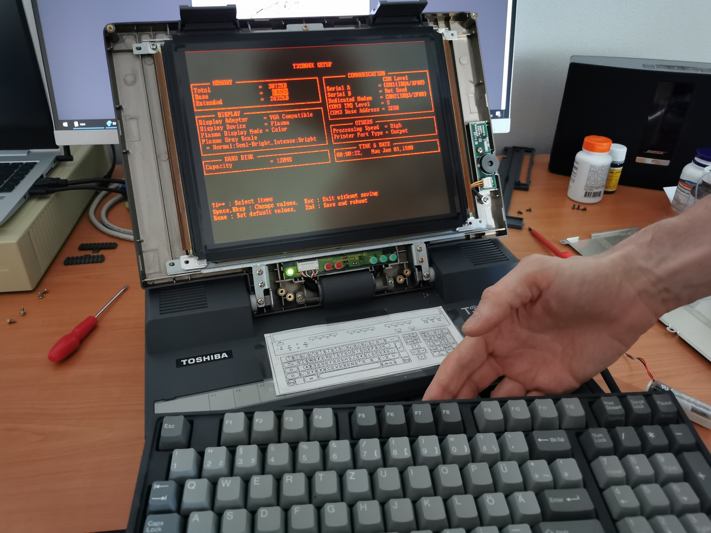
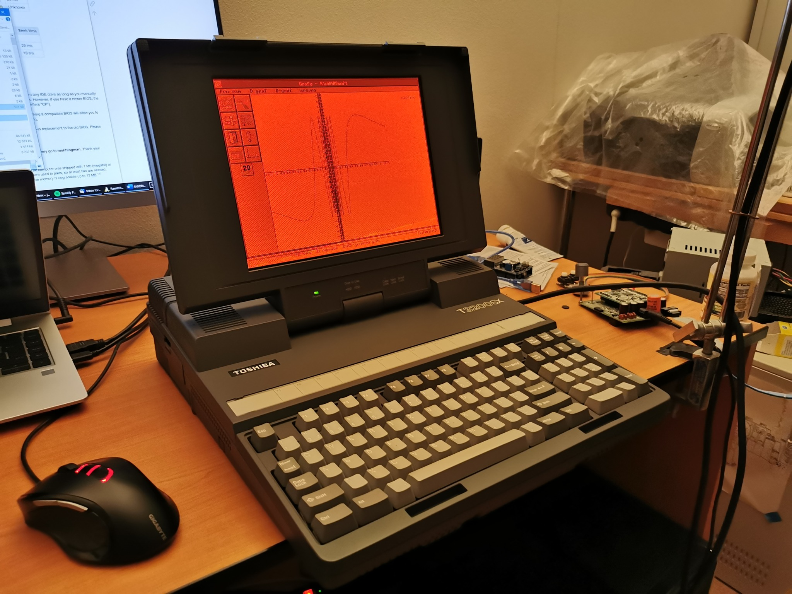

Replacing HDD in Toshiba T3200SX
There are not many laptops that can offer worse experience of replacing a hard drive. I got this T3200SX from a friend of mine and he gave me also a 120MB Conner hard drive. The machine itself had a working 40MB Conner drive, but I decided that it would be nice to have more disk space. I thought that it could take just a few minutes in a machine of this size… but I was wrong.
The hard drive replacement involves dismantling the lid, peeling off the LED board labels and removing the gas-plasma screen. Once you do all of this, you can finally remove the top cover and access the hard drive. The screws holding the drive are nicely hidden behind cables and connectors that block access to them. I think the whole process took me 30-40 minutes, but at least I was successful. This was even a bit worse that replacing a hard drive in a 12-inch iBook G4 (which is also very painful).
The already installed drive (in a different machine) could not boot. My T3200SX has an older BIOS version that does not know the 120MB drive. Thankfully, there is the ANYDRIVE utility, so I was able to install the BIOS overlay in the drive’s MBR and everything is working now (btw if you install ANYDRIVE on a drive that has only one partition that uses all the space on the drive, you can install the utility without losing the data, even though this is not mentioned in the README file).
My T3200SX has just 3MB of RAM (1MB on-board, 2x1MB in SIMMs). You might think that I can upgrade it easily with any standard SIMM, but that is not true. The machine is very picky, and it fires an “extended parity error” with every module I tried. So, although the computer has six standard memory slots, I must stick with 3MB of memory.
The machine specs are: 16-MHz Intel 386SX, 3MB RAM, 120MB HDD, 640x480 gas-plasma display… the two ISA slots are empty and waiting for a network interface and a sound card.